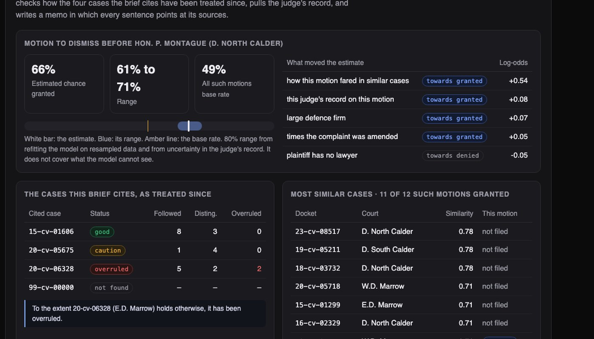
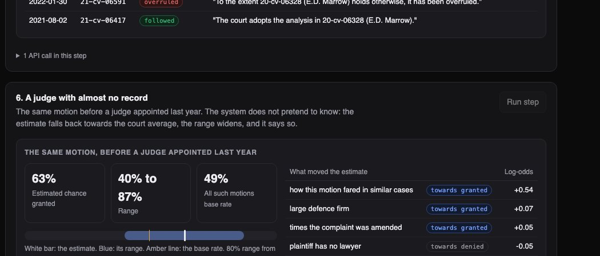

Python · Statistics · Legal analytics · 2026-10
How Sure Can Anyone Be About a Motion?
Court analytics on an invented court system: similar cases, whether a cited case has since been overruled, a judge's record with error bars, and an estimated chance a motion is granted. Checked against a simulation's hidden truth, the estimates were well calibrated, but the stated range held the true answer only 40% of the time, and the project says so.

Built from a written blueprint as one vertical slice. No court, judge, party or case here is real: every name is invented and every ruling is drawn from a simulation, which is what lets the estimates be checked against the truth. It is deliberately not built on real dockets: publishing statistical profiles of real, named judges from a portfolio project would be wrong. Nothing here is legal advice. No language model is used. Not built: PDF parsing, real court data feeds, Kafka, Terraform, single sign-on.
01 — The problem
Before filing a motion, a lawyer wants to know: how have similar cases gone, is the case I am citing still good law, and how does this judge usually rule? Tools that answer with one confident percentage hide two things: small samples (a judge with three rulings is not "100% likely to grant") and everything the data cannot see. Can software answer those questions and be honest about how much it knows?
Blueprint 5 of ten in a second build book, built as its demo scenario end to end.
02 — What I built
A Python service on PostgreSQL with a background worker and a web page, started by one docker compose up.
- Similar cases by the wording of their facts.
- Citation check: has a cited case been followed, distinguished or overruled since?
- Judge record: grant rates with a range, adjusted for small samples.
- Estimate: chance a motion is granted, its range, and what moved it.
- Memo: every sentence lists the records it rests on.
03 — How it was built
- 01
Do not trust three rulings
A judge who granted 3 of 3 motions has a "100%" record that means almost nothing. Each judge's rate is pulled towards a typical judge of these courts, strongly when there are few rulings and barely at all when there are a hundred, and shown with a range. For the demo judge: 61 of 114 granted, put at 53% with a range of 46% to 61%.
a, b = prior[0] + granted, prior[1] + n - granted mean = a / (a + b) - 02
Keep the future out of the past
The model learns only from rulings before 2023 and is tested on the two years after. A subtler leak: a judge's grant rate is an input, and each training ruling is part of that rate. So when a ruling is used for training, it is first removed from its own judge's record.
if leave_out: # a training row must not see its own outcome in the judge's record g, n = g - m["granted"], n - 1 - 03
Check what the brief cites
Every later order that cited a case is read for how it treated it. In the demo, one of the brief's four authorities has been overruled according to two later orders, which are quoted; another has been distinguished four times and followed once. A docket number that is not on record is reported as unchecked instead of being passed over.
status = "overruled" if n["overruled"] else "caution" if n["criticized"] >= 2 or n["distinguished"] > n["followed"] else "good" - 04
Count the cases that are still open
"Half of cases close within X days" is wrong if you only look at closed cases: the long ones are still open. A standard survival method counts open cases for as long as they have been open. Against the simulation's truth it was off by 0.8%; the closed-cases-only median was off by 10%.
s *= 1 - ((t == day) & e).sum() / at_risk - 05
Say what the range does not cover
The estimate comes with a range that widens when the judge is new (40% to 87%, against 61% to 71% for a judge with 114 rulings). In the simulation I could compare it with the true probability: the range contained it only 40% of the time, not the 80% its label suggests, because it measures the model's doubt about itself, not what the model cannot see. The product says exactly that next to every range.
"interval": "80% range from refitting the model on resampled data and from uncertainty in the judge's record. It does not cover what the model cannot see."
04 — Results
The demo motion: estimated 66% chance of being granted (range 61% to 71%) against a 49% base rate. Of the 40 most similar cases, 12 had this motion and 11 were granted. One cited case had been overruled.

On rulings the model never saw (six other simulated court systems):
| Ranking | Error | |
|---|---|---|
| This model | 0.741 | 0.206 |
| Judge's rate alone | 0.727 | 0.211 |
| Motion base rate | 0.650 | 0.231 |
| Knowing the truth | 0.788 | 0.187 |
Ranking is AUC (1.0 is perfect, 0.5 is guessing); error is the Brier score (lower is better). Even knowing the true probability only reaches 0.788, because a ruling is still a coin flip around it. When the model said 70%, about 70% were granted.
Checks. 29 tests, including: the confidential facts of a brief never appearing in the audit log, one firm unable to see another's briefs or records, and training rows not seeing their own outcome.
05 — What I'd do next
- Model how much outcomes vary beyond what the inputs explain, so the range can be honest in both directions.
- Partial grants and appeals, which this build treats as granted or denied.
- Calibration checks across more party types.